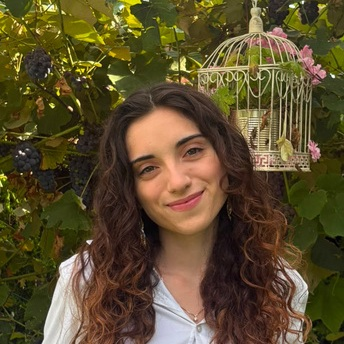
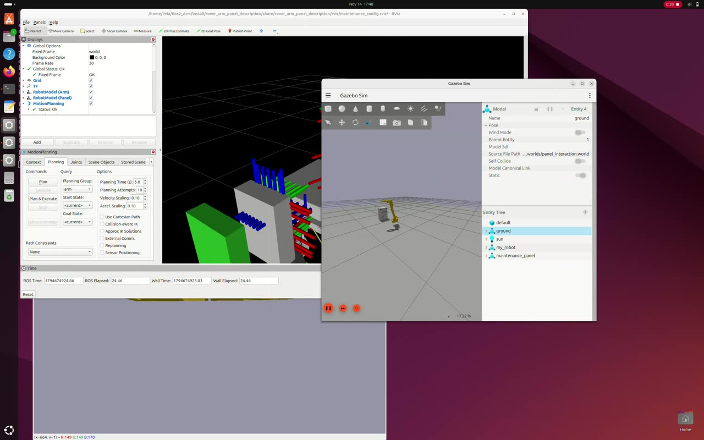
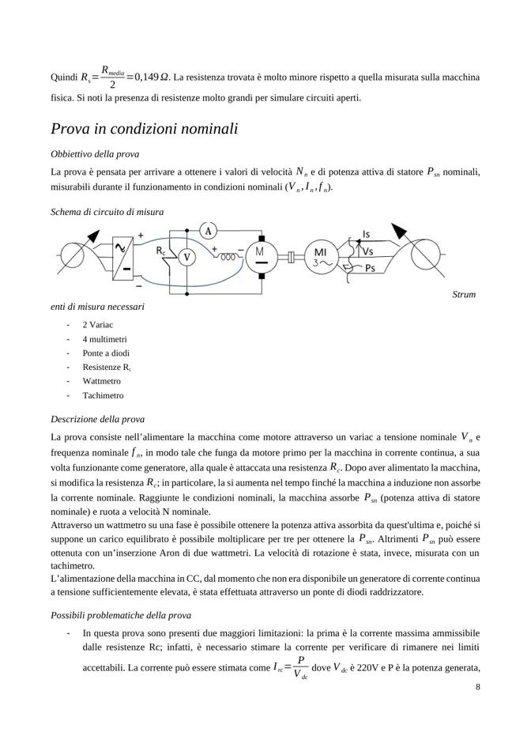
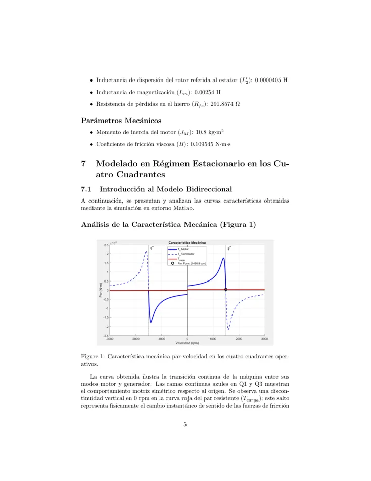

Power System Modelling & Grid Control
Dynamic network simulation, synchronous generation, voltage and frequency regulation.
MATLABSimulinkPower systems
Explore project →Engineering portfolio · Italy
I am an MSc student in Automation and Control Engineering at Politecnico di Milano, with a BSc in Electrical Engineering. I enjoy connecting physical models, programming and experimental work — especially in power systems and robotics.
Research interests: power distribution automation · control systems · autonomous robotics

Selected work
Academic, extracurricular and personal engineering work.
Dynamic network simulation, synchronous generation, voltage and frequency regulation.

Extracurricular rover project integrating RGB-D sensing, ArUco localization and MoveIt motion planning.

Extracurricular Raspberry Pi station using a Gpredict-compatible Python bridge and C++ servo control.

Experimental tests, parameter identification and characteristic curves for four types of electrical machines.

Induction-motor traction modelling and comparison of starting and braking methods.

Group design study covering traction requirements, drive components, WLTP and electromagnetic analysis.

Clarke–Park transforms, synchronous and induction-machine transients and drive simulations.
Camera-guided manipulation integrating HIKRobot vision and an industrial robot through sockets.
Ongoing academic project exploring neural-network control for a simulated track-following vehicle.
Personal electronics prototype with wireless control through an HC-06 module.
About & education
Dynamic systems, automatic control, optimization and networked systems.
Electric traction, electric machine control and engineering projects.
Electrical machines, power systems, energy distribution and network modelling.
Programming and modelling tools applied to real engineering problems.
I have also worked in private tutoring, event catering and customer-facing roles. These experiences shaped my communication and teamwork in diverse settings.
Get in touch →